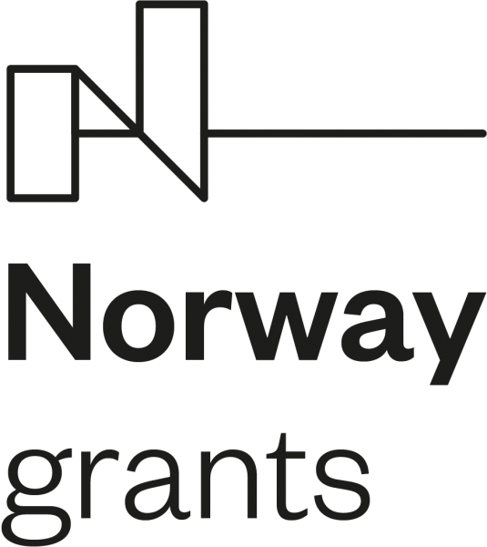
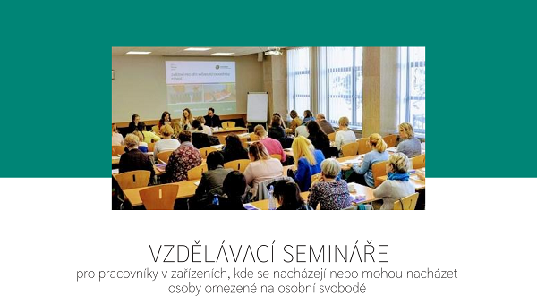

Posílení aktivit veřejného ochránce práv v ochraně lidských práv
Partneři projektu
Stručný popis projektu
Veřejný ochránce práv (dále jen „ochránce“) dle zákona č. 349/1999 Sb., o veřejném ochránci práv, ve znění pozdějších předpisů, od samého počátku chrání osoby před jednáním vybraných veřejných úřadů a institucí, čímž má dle výslovného zákonného požadavku přispívat k ochraně základních práv a svobod. Jeho referenčním rámcem má být nejen prostá zákonnost, nýbrž vedle principů dobré správy rovněž principy demokratického právního státu, mezi něž v moderních demokraciích neodmyslitelně patří ochrana základních práv a svobod. V následujících letech se navíc působnost ochránce rozrostla o výsostně lidskoprávní agendy jako je např. ochrana osob omezených na svobodě a agenda rovného zacházení a ochrany před diskriminací.
Současný stav je takový, že ochránce, resp. Kancelář veřejného ochránce práv (dále jen „Kancelář“), která plní úkoly spojené s odborným, organizačním a technickým zabezpečením činnosti ochránce, má k dispozici dostatečné zdroje na pokrytí výkonu svých základních úkolů. Nedostává se však dalších prostředků na širší okruh aktivit s plošným celospolečenským dopadem, které by přispívaly k systémovým změnám.
Cíl projektu
Projekt cílí na vyvážení zmiňovaného stavu tím, že personálně posiluje čtyři odbory Kanceláře:
- Posílení činnosti sekretariátu ochránce a jeho zástupce s cílem důsledně a systematicky uplatňovat mezinárodní a ústavní standardy ochrany lidských práv ve výstupech ochránce;
- Posílení prevence špatného zacházení (odbor dohledu nad omezováním osobní svobody);
- Posílení ochrany ohrožených dětí a jejich rodin a podpora práv dětí (odbor rodiny, zdravotnictví a práce) a
- Posílení práva na rovné zacházení a ochranu před diskriminací (odbor rovného zacházení).
Tento předem definovaný projekt pod registračním číslem LP-PDP3-001 je financován z Norských fondů 2014 – 2021 (program Lidská práva) a umožní provádění analytické, výzkumné a osvětové činnosti, které napomohou zlepšení situace ohrožených a marginalizovaných skupin, a to jak z hlediska ochrany jejich práv, tak z hlediska získávání kompetencí při jejich prosazování.
Kancelář vybuduje nové partnerství s Norwegian National Human Rights Institution, která působí jako norská národní lidskoprávní instituce (dále jen „NHRI“) a má zkušenosti s uplatňováním lidskoprávního přístupu ve své činnosti. Zaměstnanci Kanceláře navštíví tuto norskou instituci, aby získali know-how, příklady dobré praxe a inspirovali se v metodách práce.
Aktuality
- 1.2.2021 – pustili jsme do světa sociálních sítí první osvětové video. Jde o pilotní díl připravované minisérie, která představí práci kanceláře ombudsmana pomocí krátkých videí určených především dětem a dospívajícím. Podívat se na něj můžete zde.
Co jsme realizovali v roce 2020 v rámci projektu
- 18.12.2020 – zveřejňujeme doporučení zástupkyně veřejného ochránce práv ke kontaktům dítěte v pěstounské péči nejen s rodiči zde (312 kB, Adobe Acrobat dokument). Doporučení má za cíl přispět k dodržování práv dětí svěřených do pěstounské péče. Primárně je určeno pro rodiče dětí, pěstouny, doprovázející organizace pěstounů, organizace pomáhající rodičům, orgány sociálně-právní ochrany dětí a soudy.
- K 15.12.2020, tj. za třetí monitorovací období projektu, zveřejňujeme odborné výstupy sekretariátu ochránce a jeho zástupkyně. Jedná se o Analýzu k navrhování kandidátů do Výborů OSN zde (1.1 MB, Adobe Acrobat dokument), dále o připomínky k návrhu novely zákona o ochraně veřejného zdraví s ohledem na pandemickou situaci zde (237.3 kB, Adobe Acrobat dokument). Dále jde o dvě vyrozumění veřejného ochránce práv vládě ČR k problematice týkající se osob bez státní příslušnosti zde (131.4 kB, Adobe Acrobat dokument) a zde (134.8 kB, Adobe Acrobat dokument) a o vyjádření veřejného ochránce práv k individuální ústavní stížnosti, v němž byly sděleny poznatky k některým aspektům účinného vyšetřování násilí na vězněných osobách zde (411.5 kB, Adobe Acrobat dokument).
- 10.11.2020 – nachystali jsme další informační materiál v rámci osvěty dětí a mládeže. Přehledný leták popisuje kdo je ombudsman, ve kterých situacích může pomáhat dětem a jak se na něj mohou děti obrátit. Leták je ke shlédnutí zde.
- K 15.8.2020, tj. za druhé monitorovací období projektu, zveřejňujeme odborné výstupy sekretariátu ochránce a jeho zástupkyně. Jedná se o vyjádření veřejného ochránce práv jako vedlejšího účastníka k návrhu na zrušení části usnesení Vlády ČR u Ústavního soudu, který se týkal pravidel přeshraničního styku pro tzv. pendlery a další osoby. Ve vyjádření byl podpořen návrh skupiny senátorů na zrušení části usnesení vlády týkající se přeshraničních pracovníků během koronavirové krize zde (351.8 kB, Adobe Acrobat dokument). A o vyjádření pro experty OSN (Special Procedures) o tom, jak byla v České republice dodržována lidská práva v průběhu koronavirové krize. Zpráva se zaměřuje na řadu oblastí, např. dopad na klienty cestovních kanceláří, otázku omezení přítomnosti otců u porodu, situaci přeshraničních pracovníků, studentů, situaci ve vězeňství zde (570.5 kB, Adobe Acrobat dokument).
- 29.7.2020 jsme uskutečnili interní školení pro právníky a právničky Kanceláře, které se skládalo z prezentace jak teoretických lidskoprávních východisek, tak aplikace lidskoprávní argumentace v praxi činnosti Kanceláře.

- V červenci 2020 jsme vytvořili, pro zlepšení informovanosti dětí o jejich právech a povinnostech, speciální leták. Dotýká se dětí žijících v dětských domovech, či výchovných ústavech a naleznete jej zde.
- Dne 23.6.2020 jsme v rámci projektu započali cyklus vzdělávacích seminářů, tentokrát pro pracovníky v sociální oblasti. Prvním tématem byly vybrané otázky a odpovědi na poli sociálně-právní ochrany a náhradní rodinné péče. Další informace o semináři naleznete zde (382.7 kB, Adobe Acrobat dokument).

- K 15.4.2020, tj. za první monitorovací období projektu, zveřejňujeme odborné výstupy sekretariátu ochránce a jeho zástupkyně. Jedná se o vyjádření pro Výbor pro sociální, hospodářská a kulturní práva OSN zde (697.1 kB, Adobe Acrobat dokument), vyjádření veřejné ochránkyně práv ke kasační stížnosti k NSS ČR zde (338.6 kB, Adobe Acrobat dokument), vyjádření zástupkyně veřejného ochránce práv jako kolizní opatrovnice k ústavní stížnosti adresované ÚS ČR zde (409.8 kB, Adobe Acrobat dokument), připomínky v legislativním procesu k návrhu zákona o občanských průkazech zde (498.7 kB, Adobe Acrobat dokument) a přílohy ke zprávě ombudsmanky pro Poslaneckou sněmovnu za 4. čtvrtletí roku 2019 zde (1.2 MB, Adobe Acrobat dokument).
- Dne 5.3.2020 jsme v rámci projektu započali cyklus vzdělávacích seminářů pro pracovníky zařízení, kde se nacházejí nebo mohou nacházet osoby omezené na osobní svobodě. Prvním tématem byly poznatky ze systematických návštěv zařízení pro děti vyžadující okamžitou pomoc. Odborný seminář zahájila zástupkyně veřejného ochránce práv Monika Šimůnková. Další informace o semináři naleznete zde (405.9 kB, Adobe Acrobat dokument).

- Dne 15.1.2020 jsme uspořádali zahajovací tiskovou konferenci, kde veřejná ochránkyně práv Anna Šabatová představila projekt Posílení aktivit veřejného ochránce práv v ochraně lidských práv. Přítomným novinářům přiblížila jeho cíle s akcentem na mezinárodní spolupráci. Tiskovou zprávu máte možnost shlédnout zde.